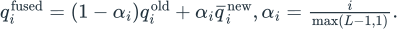

整体概括
低层输出动作块，高层维护任务状态
Meituan-Robotics-0（MR0）针对底座固定的桌面操作。低层视觉–语言–动作（VLA）策略用多视角图像、指令和本体状态生成动作块；高层 Agent 另存事件，用事件影响的任务状态决定何时启动规划。这不是在底层控制网络里直接加一个跨任务记忆。
对照原文证据
We present Meituan-Robotics-0 (MR0), a vision-language-action foundation model and embodied-agent system for stationary-base desktop manipulation.MR0 formulates low-level desktop manipulation as reactive action-chunk prediction from the current observation. At this level, the policy maintains no temporal history and conditions only on the inputs available at the current decision step. Given multi-view observations o_{t}=\{I_{t}^{(c)}\}_{c=1}^{C} , language instruction l , and proprioceptive state s_{t} at time t , MR0 predicts an H -step action chunkThe VLA policy does not explicitly maintain task state across subtasks. MR0 therefore adds an event-driven embodied agent Huo et al. (2026) ; Li et al. (2026b) ; Zhang et al. (2026b) to retain relevant context, track task progress, and revise plans as conditions change.最值得复查的实机证据与 Agent 证据不是一回事
在网线插入的单项对比中，使用完整 Rollback 数据的 CFG-DAgger 得到 0.70 成功率（SR）和 0.90 进度分数（PS），数值来自同一任务的策略实验。跨任务检索和恢复暂停任务属于另外的定性 Agent 展示，不是前两项实机指标的来源。
对照原文证据
With the full Rollback dataset, CFG-DAgger reaches 0.70 SR and 0.90 PS, compared with 0.60 SR and 0.67 PS for RECAP.The policy experiments measure execution within a single task, but do not test whether the system can recover information that has disappeared from the current observation or preserve an objective across an interruption. We therefore conduct two controlled qualitative deployments: cross-task event retrieval and condition-aware task resumption.Research gap
示范轨迹多，也未必教会策略从自己的错误状态恢复
作者把问题拆成异构数据动作语义不一致、成功示范缺乏错误恢复、当前观测窗口不含历史任务事实。采用统一末端执行器（EEF）坐标和分阶段训练解决前两项的一部分，任务事件则交给独立记忆层处理。这里是作者的设计动机，不是对整个领域的查新结论。
对照原文证据
Even after data alignment, policies trained primarily on successful demonstrations receive little guidance for recovering from the error states induced by their own closed-loop behavior. Moreover, a reactive policy conditioned only on the current observation cannot preserve task information once it leaves the observation window. A practical desktop-manipulation system must therefore connect aligned heterogeneous data, robust real-world policy learning, and persistent task-level memory.A shared multimodal backbone is first paired with a discrete action head and pre-trained jointly on vision-language data and tokenized robot actions. Continuous mid-training then introduces an MMDiT Esser et al. (2024) action head and optimizes flow matching over a unified end-effector representation, transferring the pre-trained features to fine-grained control across single-arm and bimanual embodiments.The chunk merger stabilizes local policy execution but does not preserve information across subtasks or determine when a high-level plan should change. The embodied agent addresses these requirements through explicit task state, persistent event memory, and event-triggered planning.替换前后都存，比只存成功纠正多出一条监督线索
关键对照是同一个历史锚点后的两条轨迹：策略被替换的动作段和人类纠正段。标签是局部“被替换”或“纠正”，不是整个任务必败或必胜的标签，也不要求两条路径逐帧对齐；若环境不可恢复到锚点，作者退回标准 HIL，只留下正例。
对照原文证据
We introduce Rollback to pair replaced policy segments with human corrections from a shared anchor. An operator pauses execution near failure, selects an earlier recorded state, returns the robot to it using action history, and supplies a corrective continuation.In Figure 6 , each pair (\tau^{-},\tau^{+}) shares an anchor but may diverge afterward; no frame-wise alignment is required. If the scene cannot be restored to an anchor, collection falls back to standard HIL and contributes only positive data.Labels describe local segments, independent of episode outcomes.算法主线

原图由 arXiv 加载；若未显示，可打开下方原图链接。
跟着原图读
- 找深色圆点和两种分支
t1、t2 分别标恢复到的锚点；蓝色波浪线存作 I=0，橙色人控替换作为 I=1，灰色是其他自主执行。
- 沿橙色再回到灰线读
修正后可继续自主执行并走向后续阶段；分支描述的是从共享事件点开始的不同动作，不是逐帧配准。
图是采样协议说明，没有测量回到锚点的物理误差，也不是完整回合成功率图。

原图由 arXiv 加载；若未显示，可打开下方原图链接。
跟着原图读
- 先追底行闭环
当前视觉观测与 Active Subtask 送入 VLA，输出动作；观测缓冲另向上提供历史片段，VLA 不是直接读全量事件库。
- 再看中间的双向箭头
Monitor 的结构化描述进入 Memory & Event；只有触发时才通知 Planner，后者可以检索历史事件，再更新已完成、活动和剩余任务。
图例里的 Planner 动作是示意，不给出调用准确率；条件不满足时等待及恢复由正文与其他定性图展示。
先获得语义与动作先验，再换连续动作头
清洗轨迹时共同裁剪视频、状态和动作，并检查记录能否通过运动学一致性。预训练用 FAST 把动作通过时域余弦变换及字节对编码变成可和语言共同自回归预测的 token；中训练复用视觉语言骨干，换 MMDiT 连续头，以关节状态导出的本体 token 与观测特征为条件做 flow matching。
对照原文证据
The persistence window prevents brief low-speed motions from being classified as idle. We trim only static runs connected to an episode boundary, preserving deliberate pauses during task execution. The corresponding video, state, and action intervals are removed jointly to maintain temporal synchronization.Kinematic-consistency filtering. For each embodiment, we reconstruct the end-effector position from the recorded joints using the corresponding URDF and compare it with the logged EEF position in a common frame. Samples exceeding an embodiment-specific error threshold are masked, and trajectories with persistent violations are discarded.During pre-training, FAST ( Pertsch et al., 2025 ) applies a discrete cosine transform along the temporal axis and compresses the resulting coefficients with byte-pair encoding. The encoded action chunks share the backbone vocabulary and are predicted by the same autoregressive token head used for text.For mid-training and all downstream stages, MR0 replaces the discrete interface with a continuous MMDiT action head ( Esser et al., 2024 ; Black et al., 2024 ) . As illustrated in Figure 5 , the head jointly processes an observation stream containing projected backbone features and a proprioceptive-state token, and an action stream containing a noisy action chunk. Joint self-attention exchanges information between the two streams, while the flow timestep modulates block normalization through AdaLN.同一回滚池，区分如何选择监督数据与如何用它
人控介入（HIL）的正样本可用于 HG-DAgger；RECAP 用恢复出的成功和失败轨迹训练价值网络，再从成功轨迹训练带优势条件的策略；CFG-DAgger 直接用纠正和被替换片段做正负条件。后者训练时也学无条件分支，但推断以同初始噪声分别生成正、负完整动作块后再融合。
对照原文证据
Only the human-controlled corrections \tau^{+} from successful episodes are retained (the samples with g_{t}=1 ), whether collected through standard HIL or Rollback. Across rounds, these corrections accumulate with the demonstrations to form the cumulative supervised dataset for training the next policy.For each Rollback episode, we reconstruct full trajectories from the autonomous prefix preceding the anchor ( Figure 6 ): the corrected continuation \tau^{+} gives a successful trajectory (\text{prefix}+\tau^{+}) , and a replaced branch \tau^{-} , which terminates at the intervention, gives a failed one (\text{prefix}+\tau^{-}) . Value learning uses the demonstrations together with both trajectory types, while policy training retains only the successful trajectories. The procedure is summarized in Algorithm 2 .Unlike RECAP, CFG-DAgger uses these local segments directly, without the autonomous prefix: the positive data are the demonstrations and the human corrections \tau^{+} (label I=1 ), and the negative data are the replaced segments \tau^{-} (label I=0 ). Labels describe local segments, independent of episode outcomes.At inference, we denoise a positive prediction \mathbf{a}_{+} ( I=1 ) and a negative prediction \mathbf{a}_{-} ( I=0 ) from the same initial noise, then combine the completed action chunks once in action space:部署时分开处理动作延迟和任务记忆
执行器后台预测动作块，控制端继续消费缓冲命令；新块抵达后先截去过期指令，再对齐重叠段并平滑过渡。与此同时 Monitor 从短窗口提取结构化描述，Memory Manager 保留历史事件，触发信号才让 Planner 判断继续、推进、等待或修订；动作平滑本身不解决任务记忆。
对照原文证据
Figure 7: Asynchronous action-chunk merging. Predictions made stale during inference are removed from the chunk; the aligned overlap is blended with the residual buffer, and the suffix is appended for continuous execution.Here K_{\mathrm{lat}} is a step-domain cap, set as K_{\mathrm{lat}}\approx\lceil f_{c}\hat{\tau}_{\mathrm{e2e}}\rceil , where \hat{\tau}_{\mathrm{e2e}} is the delay from observation capture to insertion of the processed chunk into the buffer, including communication, policy inference, post-processing, and inverse kinematics.Memory insertion is independent of planner activation: routine observations can be recorded with z_{t}=0 , while subtask completion, execution failure, and changes in task preconditions set z_{t}=1 .The resulting decision may preserve the active subtask, advance to the next one, wait for a temporarily unsatisfied precondition, or invoke \mathcal{P}_{\mathrm{plan}} to regenerate the remaining sequence.关键公式
动作维度对齐的是物理含义，不只是张量长度
末端位置是肩中心系下的绝对位置，不是相邻帧的位移；转动和夹爪闭合量与位置一起预测。中训练把生成动作的误差转成速度误差，掩码再让填充通道不参与训练。若移植到不同机器人，误差首先可能来自坐标系或通道语义未对齐，而非模型容量。
对照原文证据
The rotation and translation blocks of {}^{\mathrm{SC}}T_{\mathrm{EEF},t}^{(i)} provide the canonical orientation and metric absolute position target, respectively; the translation is not a temporal displacement.Continuous action objective. We train the MMDiT head with the JiT clean-sample parameterization ( Li and He, 2025 ) . Following flow matching ( Lipman et al., 2023 ) , a clean chunk a_{0} is perturbed into a noisy sample a_{\tau} , from which the head predicts \hat{a}_{0} rather than velocity directly. Prediction and target are converted to velocity form using a shared clamped denominator d_{\tau} with t_{\epsilon}=0.05 , and the model is optimized by mean squared error.where \ell_{h,j} is the element-wise JiT loss. Padded channels produce no gradient. For a downstream embodiment with a different action width, only the dimension-dependent projections are reinitialized.别把两种白盒插值混为一谈
异步缓冲内的线性权重用于对齐新旧可执行命令；CFG-DAgger 的引导则对同一观测下的正负条件动作块进行外推。这些操作位于不同的部署层级，并不改写训练过程的 flow matching；动作外推效果还依赖底层执行约束和具体任务。
对照原文证据
Figure 7: Asynchronous action-chunk merging. Predictions made stale during inference are removed from the chunk; the aligned overlap is blended with the residual buffer, and the suffix is appended for continuous execution.Action chunks amortize policy inference over multiple control steps, but inference latency requires coordinating chunk generation with ongoing execution Black et al. (2025b) ; Black et al. (2025c) ; Zhao et al. (2023) . Our EVA-Client based stack Yang et al. (2026a) keeps control continuous by decoupling the two: a background policy thread predicts a chunk from the latest observation at target rate f_{\pi} , while the control loop consumes one buffered command at rate f_{c} .At inference, we denoise a positive prediction \mathbf{a}_{+} ( I=1 ) and a negative prediction \mathbf{a}_{-} ( I=0 ) from the same initial noise, then combine the completed action chunks once in action space:We use \gamma=1.25 , extrapolating from the positive prediction away from the negative prediction. The unconditional branch is used only during training.用掩码对真实动作通道取平均
损失按每步有效通道，而不是整张动作块的固定宽度取平均。示例：两步各有两个有效通道，四项误差是 1、2、3、4，损失为 10 除以 4，也就是 2.5；占位通道不进分母。
符号与实现提醒
- H
- 动作块步数
- d_max、j
- 固定填充后的通道数、通道索引
- m[j]
- 动作通道有效为 1，填充为 0
- loss[h,j]
- 该元素的 JiT 速度误差项
掩码必须与机器人的末端通道顺序一致；至少要有一个有效通道。
在重叠时域从旧命令平滑切到新命令

对齐以后，随重叠段索引增加新命令的权重。例：重叠三步时权重是 0、0.5、1，中间一拍若旧值是 4、新值是 6，则执行 5；首末各服从旧、新值。
符号与实现提醒
- i、L
- 重叠索引与长度，单位为控制步
- q_old、q_new_aligned
- 残余缓冲命令和去掉过期部分的新命令
- alpha[i]
- 无量纲新命令权重
重叠只有一拍时权重为零。先核对附录短缓冲填充和逆运动学的位置，不能跨表示直接平均。
以正负条件完整动作块做一次引导
正负分支用同一起始噪声，各自解出完整动作块；这里只在末尾组合。用原文 γ=1.25 举标量例：正为 0.6、负为 0.2，输出是 0.2 加 1.25 倍的 0.4，即 0.7，落在正值另一侧。
符号与实现提醒
- a_plus、a_minus
- 各为 H 步的同表示动作块，分别以正、负条件生成
- γ
- 无量纲引导强度
- a_CFG
- 外推后的动作块，随后由执行器处理
不是每个去噪步都做引导；无条件分支只用于训练。外推的有效动作范围与安全性要另检验。
实验怎么做
模拟评独立策略，RoboDojo 另有历史增强
RoboTwin 2.0 在 Clean 与 Randomized 两套场景分别测每任务 100 个回合，共 50 项任务；同时部署 Agent 的行为不进入此评估。RoboDojo 用初始场景参考图和运动历史增强了低层策略，表中该方法是三次评估种子等权平均，不是加上高级事件记忆的参数对照。
对照原文证据
Table 3: RoboTwin 2.0 results. Success rate (%) over 50 tasks and 100 episodes per task in each split. Overall is the mean of Clean and Randomized; “–” denotes an unreported result. Bold and underlining indicate the best and second-best results.Evaluation covers 100 episodes per task on each split, resulting in 5,000 episodes per split. We evaluate the VLA policy alone, without the agent system or RL post-training.We extend the base MR0 policy with an initial-scene reference and motion history to provide temporal context. The reference uses the first main-camera image, while a frozen CD-LAM encoder Wei et al. (2026) extracts latent actions from historical image pairs.Baseline results follow the official leaderboard; MR0 results are the equally weighted mean across three evaluation seeds. Generalization averages the standard and randomized settings.实机必须区分对比对象与样本单位
每个比较内匹配初始条件，每任务自主测试 30 回合。PS 分别对应连续正确放块、折衣用时和插线里程碑，不是同一种物理量。表 5 的 Ethernet 行用于数据规模与 Rollback 对比，两种骨干的主对比另用了更大网线数据集；训练样本统计是有效 50 步动作块而非独立回合。
对照原文证据
Tasks and metrics. We evaluate three tasks covering semantic grounding, deformable-object manipulation, and precise bimanual control ( Figure 9 ). We report success rate (SR) and a task-specific progress score (PS):Ethernet insertion. The robot grasps a cable, transfers it between arms, and aligns and inserts the connector into a port. Success requires full insertion; \mathrm{PS}_{\mathrm{ethernet}}=m/3 , where m counts completed milestones: grasping, handover, and insertion.Each policy is evaluated autonomously for 30 trials per task, with matched initial conditions and the same rollout protocol within each comparison. We average SR and PS over evaluation trials.Table 5: Real-world post-training data. Demo counts teleoperated demonstrations; HIL / Rollback counts correction episodes collected with each task’s mechanism. Training Samples counts valid 50-step action chunks after preprocessing. The Ethernet row applies to the HIL scaling and Rollback comparisons; the MR0 vs. \pi_{0.5} comparison uses over 1,400 Ethernet episodes.算力报告能对齐阶段，不能直接换算总成本
离散预训练报告在 256 张 GPU 上运行 500,000 步，中训练使用 128 张 GPU；论文区分预训练承接权重和新初始化的动作头。正文列出主页、代码、模型及数据入口，附录提供异步执行与价值训练参数。已读取来源不足以把全流程的各环节换算为统一训练成本。
对照原文证据
We train the backbone and extended action-token embeddings end to end for 500,000 steps on 256 GPUs using AdamW with cosine learning-rate decay. The resulting checkpoint initializes mid-training.In this stage, we train on 128 GPUs using AdamW with cosine learning-rate decay, applying a lower learning rate to the transferred backbone and a higher rate to the newly initialized action head.Quantity or option Value Role f_{c} 30\,\mathrm{Hz} Command-consumption and publication rate of the control loop. f_{\pi} 3\,\mathrm{Hz} Target background prediction rate. H 50 Action horizon returned by the policy server. K_{\mathrm{lat}} 4 Maximum number of leading commands removed from an incoming chunk. m_{\min} 8 Minimum old-reference length used for short-buffer padding. Warm-up queries 2 Synchronous startup queries before the background loop begins.Value learning steps / batch size 6,000 / 256 Value peak learning rate 5\times 10^{-5} Value warm-up steps 500 Value final learning rate 1\times 10^{-6} Advantage horizon N / action horizon H 50 / 50 Advantage threshold \epsilon Aggregated-data 70th percentile提升与证据
模拟榜单：最高均值不等同于每个划分都最佳
RoboTwin 2.0 作者表中 MR0 的 Clean、Randomized、Overall 成功率分别为 93.2%、93.9%、93.6%，总体是两个划分均值；Clean 上表内 GalaxeaVLA 的 93.7% 更高。RoboDojo 上，历史增强 MR0 的 Avg. Score/SR 为 21.68/15.73%，是所比较 VLA 按平均 SR 排名第五，不是混排所有模型。
对照原文证据
Table 3: RoboTwin 2.0 results. Success rate (%) over 50 tasks and 100 episodes per task in each split. Overall is the mean of Clean and Randomized; “–” denotes an unreported result. Bold and underlining indicate the best and second-best results.As shown in Table 3 , Meituan-Robotics-0 achieves the highest overall success rate among the compared methods at 93.6%, with 93.2% on Clean and 93.9% on Randomized, a difference of 0.7 percentage points.GalaxeaVLA (G0.5) ( Liu et al., 2026 ) 93.7 92.8 93.3 Meituan-Robotics-0 93.2 93.9 93.6With approximately 13.6k hours of embodied training data, the history-augmented MR0 achieves an average Score of 21.68 and an SR of 15.73%, ranking fifth by average success rate among the compared VLA models.同一 Rollback 数据上，差异同时出现在完成率和进度
网线插入的三种算法用相同演示、相同回滚池，并从同一中训检查点重训。完整数据下，CFG-DAgger 的 0.70 SR、0.90 PS 高于 RECAP 的 0.60 SR、0.67 PS。附录写明每轮三法各贡献 50 条、共享新增 150 条；是同池训练比较，而非每条轨迹上的配对因果归因。
对照原文证据
On Ethernet insertion, we compare MR0 trained with HG-DAgger, RECAP, and CFG-DAgger using the same demonstrations and Rollback episodes. All three methods are trained from the same mid-training checkpoint, \pi_{\mathrm{mid}} .Learning from Rollback pairs. CFG-DAgger achieves higher SR and PS than both baselines after each collection round ( Figure 11 ). With the full Rollback dataset, CFG-DAgger reaches 0.70 SR and 0.90 PS, compared with 0.60 SR and 0.67 PS for RECAP. CFG-DAgger uses direct segment labels from Rollback and requires neither value learning nor advantage labeling.For the Ethernet Rollback comparison ( Figure 11 ), In each round of the three rounds, each of the three methods contributes 50 episodes to a shared pool of 150 new Rollback episodes.技能监督和 Agent 并未被同一组消融隔离
CALVIN 的受控选择试验用的是 StarVLA 配置，平均完成长度上，空间组里更高的是 3D Grounding 的 4.037；作者仍选 2D Grounding 以减少几何标注。Agent 的事件检索及前提恢复则是定性个例；不能从这两组结果推断所有组件单独对实机指标的因果贡献。
对照原文证据
Spatial localization + 2D Grounding 3.941 91.3% 83.7% 78.1% 73.2% 67.8% + 2D Pointing 3.806 90.8% 81.8% 74.8% 69.9% 63.3% + 3D Grounding 4.037 92.4% 85.3% 79.6% 75.7% 70.7% Action-related understandingAll variants use the same StarVLA ( StarVLA Community, 2026a ) configuration, are trained on environments A, B, and C, and are evaluated on environment D.For spatial localization, we choose 2D grounding because it avoids costly geometric annotations and scales more readily than 3D grounding.Qualitative agent deployments further demonstrate cross-task event retrieval and recovery from temporarily unsatisfied task conditions.
原图由 arXiv 加载；若未显示，可打开下方原图链接。
跟着原图读
- 先区分两个纵轴
左边是完整插入的成功率，右边是达成的插线里程碑进度；都以百分数画出但含义不同。横轴是累计数据轮次，第零轮用共享的 SFT。
- 比较各轮离散点而非线段
橙色 HG-DAgger 与绿色 RECAP 的左右排序不同；蓝紫色 CFG-DAgger 在每个采集轮次的两项点值都更高。曲线仅连接观察点，不是每轮中的连续测量。
没有误差棒；不能把此图外推成其它操作的提升幅度，也不能与另一套主对比的网线数据直接对齐。
局限与追问
原文范围：跨任务检索示例没有验证先前目标仍成立
钥匙在另一个任务执行中被移走，系统仍继续可行的螺丝刀子任务，之后凭事件找回钥匙。作者明确这一演示不是在检验此前已经满足的所有目标条件是否仍然成立；另一个等待案例只说明在目标物重新出现时可以恢复原目标。
对照原文证据
This case evaluates event retention and later retrieval, rather than the preservation of all previously satisfied goal conditions under external intervention.When the key returns, a recovery event triggers reassessment against the latest observation, after which the robot places the key and completes the original instruction.本站追问：效果来自负数据，还是来自额外的推断采样
固定对比时的回滚锚点、训练数据、训练预算和起始权重，分别去掉负段、去掉引导、或只保留双路采样预算；测同任务与新物体下的完成率、干预率、遇阻回退、GPU 时延。若优势只在双路算力加倍时出现，应缩小对负数据本身的归因。
连接你的研究
在有延迟的操作台上，单独验证缓冲更新机制
从同一策略收集固定时间戳的动作块，在回放与安全台架注入同一组延迟和丢帧轨迹。对比立即覆盖、仅截过期动作、截断加融合，交付入队延迟分位数、缓冲下溢率、末端峰值跃变、轨迹误差与完成率。先验证局部平滑，别拿 Agent 成功率代替底层安全指标。
用可控的目标物移动与遮挡验证事件记忆
为固定底座机械臂建立任务集，控制物体移走、暂时遮挡、原处返回和换位置四种干扰；用相同低层策略比较无记忆、定频重规划和事件触发。统计有效恢复率、误唤醒次数、额外 Planner 请求、过期事件错误率，并按物体与会话隔离测试。
来源与边界
固定版本标注 CC BY 4.0。三幅作者原图直接通过 arXiv v3 官方端点展示，保留完整图件、自然尺寸、作者、英文图注和定位；本站不改图、不镜像 PDF 或全文。中文解说为本站整理。
对照原始英文摘要
收录历史：2026-11-17
原文许可：查看本版本许可 ↗；外部嵌入不等于任意转载授权。